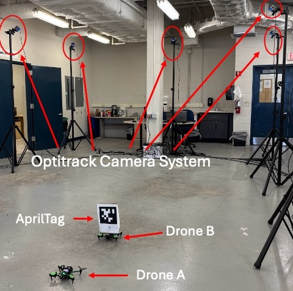
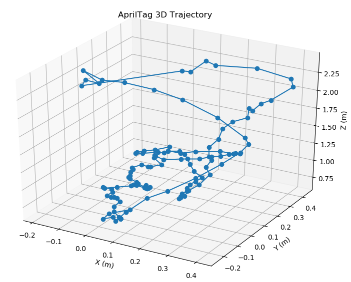
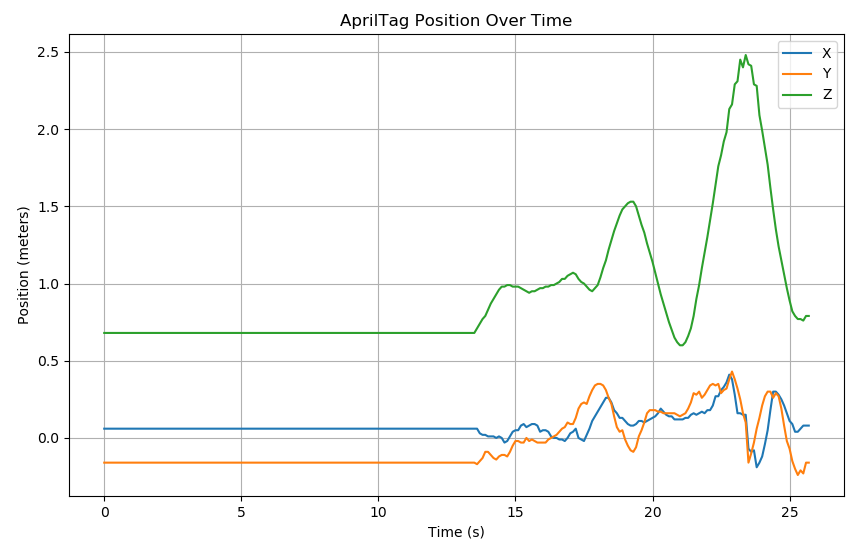
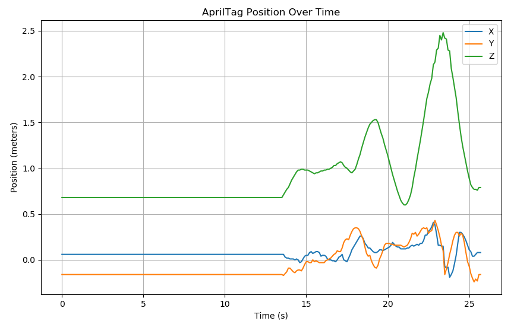
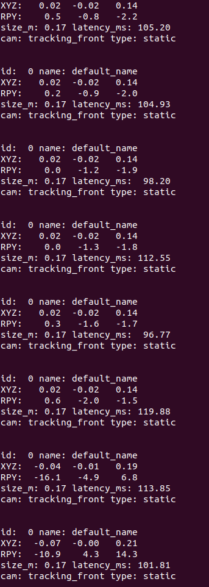

This paper presents a comparative study evaluating the accuracy of relative localization in GPS-denied environments using Starling2 drones as test agents. We benchmark an open-source, vision-based localization method against ground-truth data from an OptiTrack motion capture system. Experiments are conducted across three fixed inter-agent distances (3 ft, 6 ft, and 12 ft) to evaluate spatial performance and drift. Additionally, we present preliminary results using a YOLOv8 neural network for drone detection as an alternative onboard localization method.
Fig. 2: Schematic of experimental setup showing Drone A estimating the pose of Drone B using onboard AprilTag detection. OptiTrack provides ground truth.
The Starling2 platform was evaluated in a 15×15 ft indoor test arena with 12 OptiTrack cameras. Drone A used its onboard camera to detect an AprilTag attached to Drone B for pose estimation, while OptiTrack provided ground-truth data.
Fig. 3: Photo of the indoor experimental environment with labeled drones and OptiTrack cameras.
Pose data was captured at distances of 3 ft, 6 ft, and 12 ft. The true relative transform TBA was calculated using the relative rotation matrix RBA and translation vector tBA.
Fig. 4: Onboard camera view showing successful AprilTag detection by Drone A.
AprilTag-based relative localization remained highly accurate at close distances, with increasing error observed at 12 ft due to tag size and motion blur. Nonetheless, detections remained reliable across all trials.
 

Fig. 5: Position and orientation error vs. time for different distances.
Position errors increased from 3.4 cm at 3 ft to 12.7 cm at 12 ft. Orientation error followed a similar trend. These results demonstrate the limits of visual pose estimation at greater distances.
Fig. 6: Terminal output of real-time relative pose estimate logged via VOXL.
Preliminary testing using YOLOv8 showed effective drone detection at short range, with bounding box center used to infer bearing. Future work will explore depth estimation for full pose recovery.